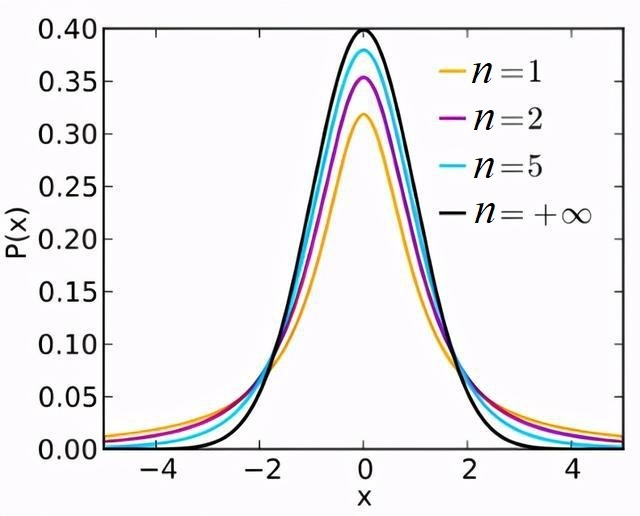
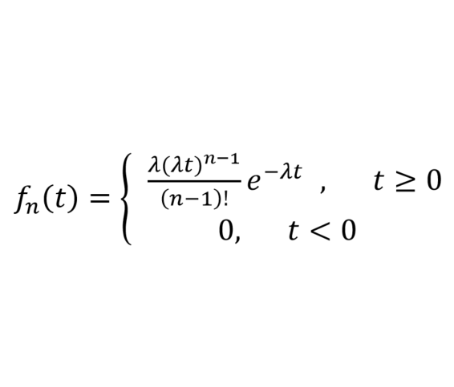
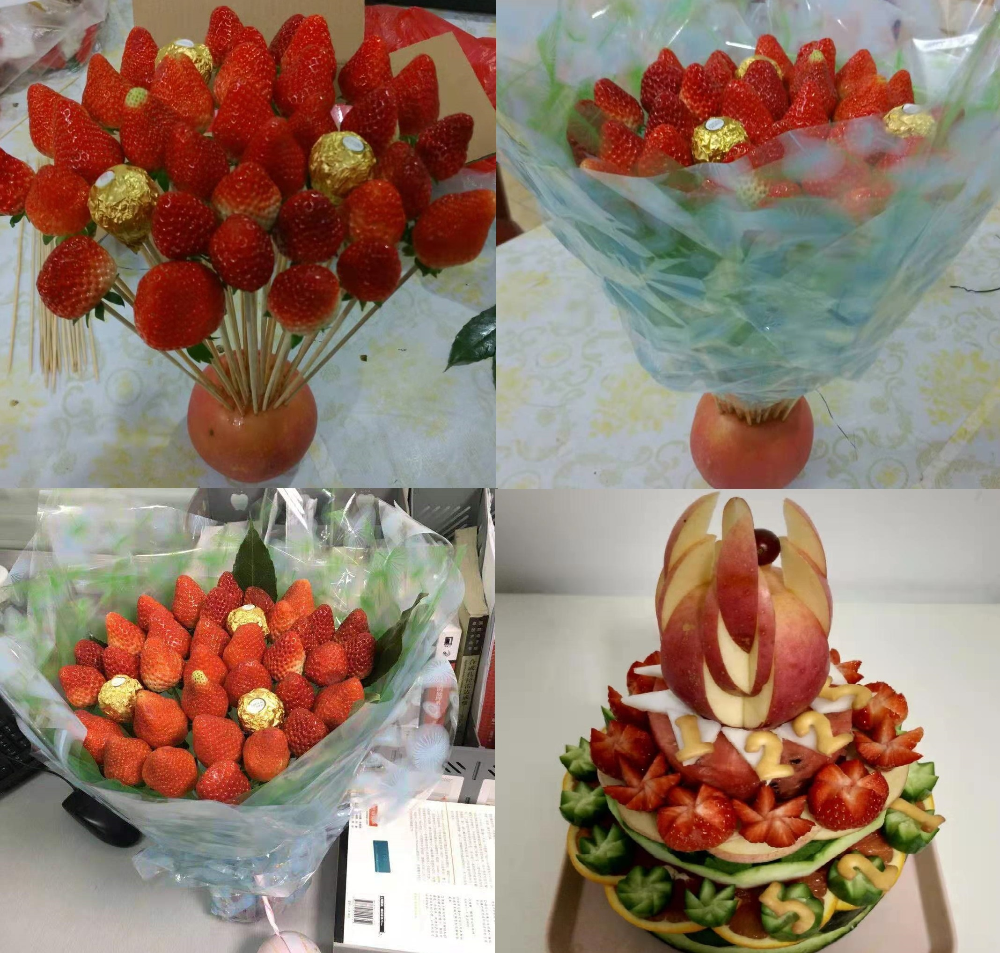
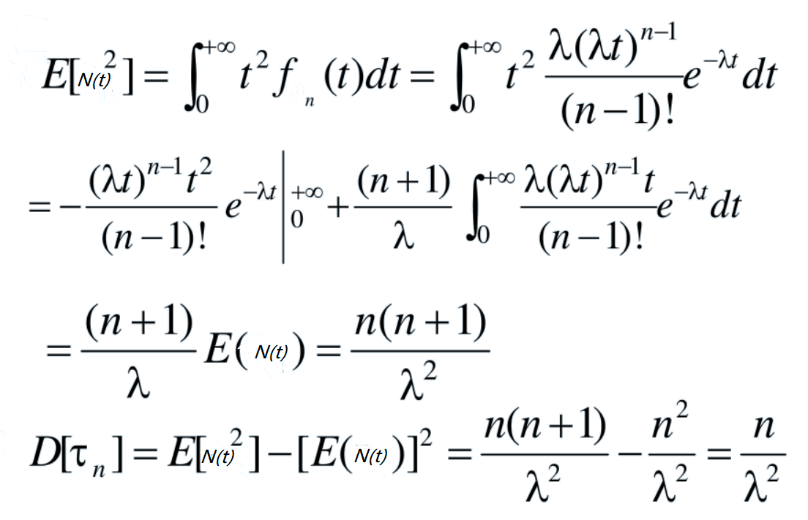
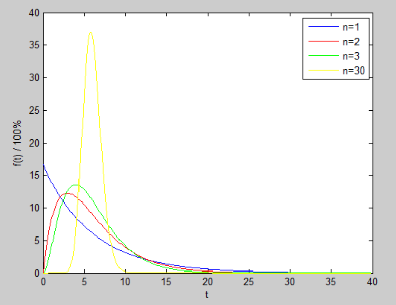

随机数
Verilog 中使用系统任务 $random(seed) 产生随机数，seed 为随机数种子。
seed 值不同，产生的随机数也不同。如果 seed 相同，产生的随机数也是一样的。
可以为 seed 赋初值，也可以忽略 seed 选项，seed 默认初始值为 0。
不使用 seed 选项和指定 seed 并对其修改来调用 $random 的代码如下所示：
实例
integer seed ;
initial begin
seed = 2 ;
#30 ;
seed = 10 ;
end
//no seed
reg [15:0] randnum_noseed ;
always@(posedge clk) begin
randnum_noseed <= $random(); //不指定随机种子
end
//with seed
reg [15:0] randnum_wtseed ;
always@(posedge clk) begin
randnum_wtseed <= $random(seed); //指定随机种子
end
仿真波形图如下。

无论是否赋初值，每产生一次随机数后，seed 值改变，随机数也随之改变。
每改变一次 seed 值，当前输出的随机值会改变；但是下一个状态时，随机数的走向又恢复成系统内部产生的随机序列。
例如仿真图中 t1 和 t2 时刻随机种子不同，产生是随机数也不同。但是其他时钟周期，产生的随机数都是相同的。
建议调用系统任务 $random 时，不指定 seed 选项，或指定 seed 选项时使用变量传递参数。
不建议调用 $random 时，将常数项写到 seed 参数处。此时 seed 值被固定，可能只会产生一个随机数。例如以下写法是不建议的：
randnum_wtseed <= $random(2); //不建议将常数项指定给 seed
可以使用取余的方法，将随机数限定在一定的数据范围内。例如：
实例
parameter MAX_NUM = 512;
parameter MIN_NUM = 256;
reg [15:0] num_range1, num_range2, num_range3 ;
always@(posedge clk) begin
//产生的随机数范围为 -511 ~ 511, ±（MAX_NUM-1）
num_range1 <= $random() % MAX_NUM;
//产生的随机数范围为 0 ~ 511, （0 ~ MAX_NUM-1）
num_range2 <= {$random()} % MAX_NUM;
//产生的随机数范围为 MIN_NUM ~ MAX_NUM，包含边界
num_range3 <= MIN_NUM + {$random()} % (MAX_NUM-MIN_NUM+1);
end
随机数按照有符号、十进制格式显示，前几个数据结果如下：

概率分布
Verilog 提供了许多按一定概率分布产生数据的系统任务，简单描述如下：
| 系统任务 | 调用格式 | 任务描述 |
|---|---|---|
| 均匀分布 | $dist_uniform(seed, start, end); | start、end 为数据的起始、结尾 |
| 正态分布 | $dist_normal (seed, mean, std_dev); | mean 为期望值，std_dev 为标准差 |
| 泊松分布 | $dist_poisson(seed, mean); | mean 为期望 (等于标准差) |
| 指数分布 | $dist_exponential(seed , mean); | mean 为单位时间内事件发生的次数 |
| 卡方分布 | $dist_chi_square(seed, free_deg); | free_deg 为自由度 |
| t 分布 | $dist_t(seed, free_deg); | free_deg 为自由度 |
| 埃尔朗分布 | $dist_erlang(seed, k_stage, mean); | k_stage 为阶数，mean 为期望 |
均匀分布（Uniform Distribution）
均匀分布在等长区间上的取值概率是相同的。
概率密度函数及概率分布图如下所示：


其实，系统任务 $random 实现的就是均匀分布。
调用 $dist_uniform 在（256,512）区间上产生均匀分布数据的代码如下：
实例
reg [15:0] data_uniform;
always@(posedge clk) begin //在 MIN_NUM ~ MAX_NUM 产生随机数
data_uniform <= $dist_uniform(seed_dis, MIN_NUM, MAX_NUM);
end
正态分布（Normal Distribution）
正态分布数学期望为 μ，标准差为 σ，记做 N (μ, σ²)。
数学期望为 0、标准差为 1 的正态分布称为标准正态分布。
正态分布曲线呈钟型，两边低，中间高，左右对称。
正态分布概率密度函数及分布图如下所示：


调用 $dist_normal 产生期望为 0、标准差为 1 的标准正态分布数据的代码如下：
实例
reg [15:0] data_normal;
always@(posedge clk) begin //期望为0、标准差为1 的标准正态分布
data_normal <= $dist_normal(seed_dis, 0, 1);
end
泊松分布（Poisson Distribution）
泊松分布用于描述某个时间或空间范围内，某事件发生 X 次的概率。
泊松分布的数学期望和标准差相同，均为 λ，其概率密度函数及分布图如下所示：


调用 $dist_poisson 产生期望为 4 的泊松分布数据的代码如下：
实例
reg [15:0] data_poisson;
always@(posedge clk) begin
data_poisson <= $dist_poisson(seed_dis, 4);
end
指数分布（Exponential Distribution）
指数分布用以描述泊松过程中随机事件发生的时间间隔的概率。泊松过程即事件以恒定的平均速率连续且独立地发生的过程。例如等公交车时两辆车到来的时间间隔，就符合指数分布。
设 λ>0 为单位时间内事件发生的次数（又称为率参数），x 为事件发生的时间间隔，则其概率密度函数及分布图如下所示：


调用 $dist_exponential 产生率参数为 1 的指数分布数据的代码如下：
实例
reg [15:0] data_exp;
always@(posedge clk) begin
data_exp <= $dist_exponential(seed_dis, 1);
end
卡方分布（Chi-Square Distribution）
n 个服从标准正态分布的随机变量的平方和构成新的随机变量的分布规律称为卡方分布，记做，其中 n 称为自由度。
卡方分布概率密度函数及分布图如下所示：


调用 $dist_chi_square 产生自由度为 6 的卡方分布数据的代码如下：
实例
reg [15:0] data_chi_sq;
always@(posedge clk) begin
data_chi_sq <= $dist_chi_square(seed_dis, 6);
end
t 分布（T-Distribution）
假设 X 服从标准正态分布 N (0, 1)，Y 服从卡方分布的分布称为自由度为 n 的 t 分布,记为 Z ~ t(n) 。
t 分布用于根据小样本来估计呈正态分布且方差未知的数据变量总体的均值。如果样本数量足够多且总体方差已知，则应该用正态分布来估计总体均值。
t 分布是对称的钟形分布，与正态分布类似，但尾部较重，这意味着它更容易产生远低于平均值的值。其概率密度函数及分布图如下所示：


调用 $dist_t 产生自由度为 5 的 t 分布数据的代码如下：
实例
reg [15:0] data_t;
always@(posedge clk) begin
data_t <= $dist_t(seed_dis, 5);
end
埃尔朗分布（Erlang Distribution）
设参数为 λ 泊松过程 V1, V2, ..., V3, Vn 相互独立，N (t) 表示 [0, t) 内随机点出现的个数，则 N (t) = V1 + V2 + ... + Vn 的分布称为 Erlang 分布。
Erlang 分布与指数分布一样，多用来表示独立随机事件发生的时间间隔。遵循 Erlang 分布的随机变量可以被分解为多个相同参数的指数分布的随机变量之和，使得 Erlang 分布被广泛应用于可靠性理论和排队论中。
Erlang 分布概率密度函数及分布图如下所示：


Why The Face? 你竟然拿这样的水果 idea 来充数 Erlang 分布？
上述概率分布任务都只列举了调用方法，并没有对数据进行分析验证。下面有介绍借助 Matlab 画图工具，自己动手去分析概率分布任务 $dist_erlang 所产生数据的特性。
调用 $dist_erlang 产生阶数为 3、期望为 6 的 Erlang 分布数据的代码如下：
实例
reg [15:0] data_erlang;
always@(posedge clk) begin
data_erlang <= $dist_erlang(seed_dis, 3, 6);
end
数据分析
现实证明，还是熟知的分布数据分析起来比较方便。一些平台关于 Erlang 分布相关的可参考性集成函数是少之又少。明知没有爱（尔朗），偏向爱而行！
Verilog 数据文件
首先，在 Verilog 模型中产生 4 组服从 Erlang 分布的数据，并打印到文件中。
实例
integer fd1, fd2, fd3, fd30 ;
initial begin
fd1 = $fopen("data_erlang1.hex", "w");
fd2 = $fopen("data_erlang2.hex", "w");
fd3 = $fopen("data_erlang3.hex", "w");
fd30 = $fopen("data_erlang30.hex", "w");
repeat(1000) begin //取1000个数据分析
@(posedge clk) ;
#1 ;
$fdisplay(fd1, "%h", data_erlang1);
$fdisplay(fd2, "%h", data_erlang2);
$fdisplay(fd3, "%h", data_erlang3);
$fdisplay(fd30, "%h", data_erlang30);
end
$fclose(fd1);
$fclose(fd2);
$fclose(fd3);
$fclose(fd30);
end
reg [15:0] data_erlang1;
reg [15:0] data_erlang2;
reg [15:0] data_erlang3;
reg [15:0] data_erlang30;
always@(posedge clk) begin
data_erlang1 <= $dist_erlang(seed_dis, 1, 6);
data_erlang2 <= $dist_erlang(seed_dis, 2, 6);
data_erlang3 <= $dist_erlang(seed_dis, 3, 6);
data_erlang30 <= $dist_erlang(seed_dis, 30, 6);
end
Verilog 数据分析
Matlab 中可以使用柱状图函数 hist 直接对各个数据进行统计画图显示，但对于概率分布情况该函数实际画图效果并不是很好（欢迎提供良好的画图方法）。这里使用 Matlab 数量统计函数 tabulate 对各个数据进行统计，然后使用普通画图函数 plot 显示其百分比。
Matlab 读取 Verilog 模块产生的数据并对其进行分布图显示的代码如下。
实例
%=======================================================
% data analysis from $dist_erlang in Verilog
%=======================================================
%按字符串读取，再进行十六进制到十进制的转换
data_erlang1_hex = textread('data_erlang1.hex', '%s') ;
data_erlang2_hex = textread('data_erlang2.hex', '%s') ;
data_erlang3_hex = textread('data_erlang3.hex', '%s') ;
data_erlang30_hex = textread('data_erlang30.hex', '%s') ;
data_erlang1 = hex2dec(data_erlang1_hex);
data_erlang2 = hex2dec(data_erlang2_hex);
data_erlang3 = hex2dec(data_erlang3_hex);
data_erlang30 = hex2dec(data_erlang30_hex);
%统计数据数量，并画图显示
num_erlang1 = tabulate(data_erlang1) ;
num_erlang2 = tabulate(data_erlang2) ;
num_erlang3 = tabulate(data_erlang3) ;
num_erlang30 = tabulate(data_erlang30) ;
figure; plot(num_erlang1(:,1)/6, num_erlang1(:,3));
hold on; plot(num_erlang2(:,1)/6, num_erlang2(:,3), 'r');
hold on; plot(num_erlang3(:,1)/6, num_erlang3(:,3), 'g');
hold on; plot(num_erlang30(:,1)/6, num_erlang30(:,3), 'y');
legend('n=1', 'n=2', 'n=3', 'n=30');
Verilog 模型产生的 Erlang 数据分布图如下所示。

Erlang 分布期望
千万要注意的是，λ 参数是泊松分布的期望，而不是 Erlang 分布的期望。
Verilog 系统任务 $dist_erlang(seed, k_stage, mean) 中第三个参数为期望值。如果直接将期望值带入到 λ 参数，将得到错误的分布结果。
下面简（偷）单（懒）推（参）导（考）下 Erlang 分布的数学期望。

附 Erlang 分布方差的推导过程。

Matlab 理论分布
使用 Matlab 内置函数 random，可以产生多种类型的分布数据，然而偏偏没有 Erlang 分布。
下面利用概率密度分布函数产生服从 Erlang 分布的数据。
其中，Verilog 模型中期望值为 6，则实际参数 λ = n/6 。
Matlab 产生 Erlang 分布数据的代码如下。
实例
%=======================================================
% generating data of Erlang distribution
%=======================================================
NUM = 400 ;
EXPECT = 6 ;
for n=[1, 2, 3, 30] //产生4组数据
lamda = n/EXPECT; //期望值转换
t = (0:NUM-1)*0.1 ;
pt(n,:) = (lamda).^n *(t).^(n-1)/factorial(n-1) .* exp(-lamda * t) ;
end
figure; plot(t, pt(1,:)*100);
hold on;plot(t, pt(2,:)*100, 'r');
hold on;plot(t, pt(3,:)*100, 'g');
hold on;plot(t, pt(n,:)*100, 'y');
xlabel('t');
ylabel('f(t) / 100%');
legend('n=1', 'n=2', 'n=3', 'n=30');
Matlab 产生 Erlang 的数据分布图如下所示。
对比 Verilog 模型产生的数据，两者的分布区间、分布概率及分布曲线走势基本是一致的。只是 Verilog 中产生的是时间间隔较大的数据，分布图不是平滑的曲线。


点我分享笔记